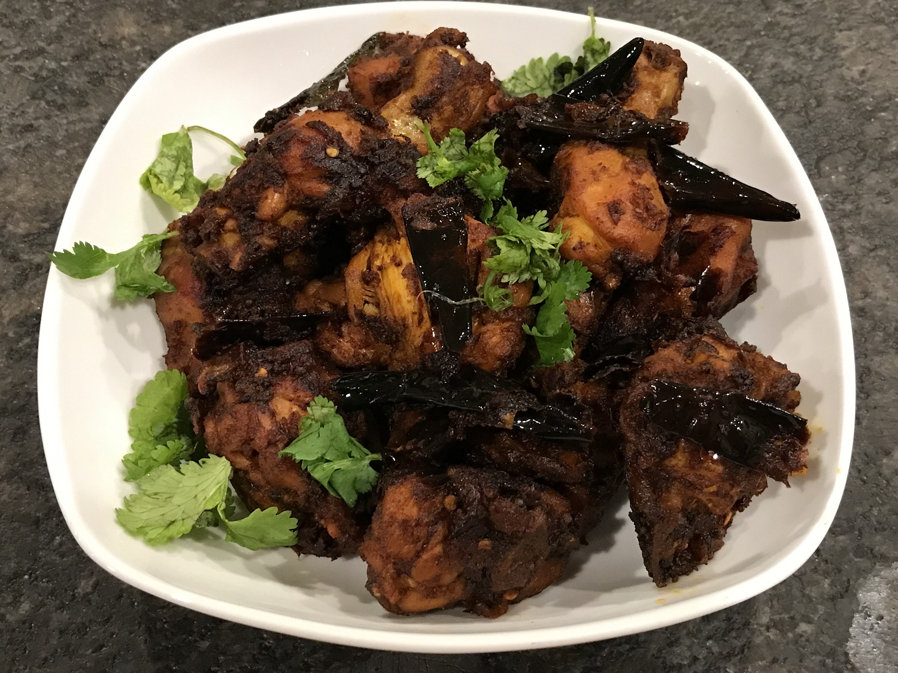

Pallipalayam Chicken
Prep Time: 20 minutes
Cook Time: 30 minutes
Servings: 4
Ingredients:
- 500g Chicken (with bone, small pieces)
- 15–20 Dry red chilies (adjust spice)
- 1 cup Shallots (sambar onion), sliced
- 2 tbsp Garlic (sliced or crushed)
- 2 tbsp Coconut bits (small pieces)
- 3 tbsp Gingelly oil (nalla ennai)
- Few Curry leaves
- Salt to taste
Instructions:
- Heat gingelly oil in a kadai.
- Add dry red chilies, curry leaves, and coconut pieces. Sauté until slightly crisp.
- Add shallots and garlic. Fry till they turn golden brown.
- Add cleaned chicken pieces and salt. Mix well.
- Cook on medium flame till chicken releases water.
- Cover and cook until chicken is soft and cooked through (about 20–25 minutes).
- Once cooked, open the lid and fry till oil separates and chicken turns dry and roasted.
- Serve hot with rasam rice, chapati, or parotta.